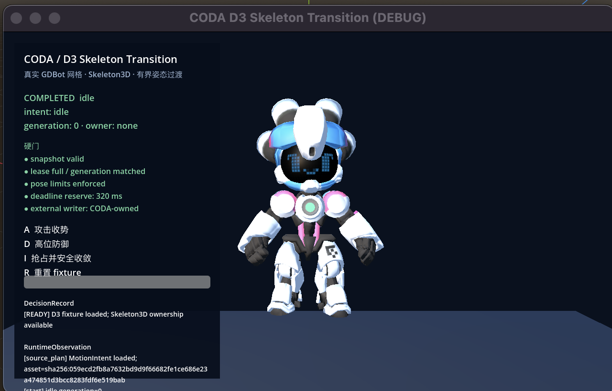

CODA / Demo Suite
意图编排 · 可中断运行时 · Skeleton3D · 多保真 · Anytime · Fail-closed
离线证据可重跑 · npm run demo:smoke
Scene / 视觉状态
当前真实视觉素材：AIBI/GDBot。最终商业交付仍需替换 CC BY-NC-SA 原型资产或取得授权。

Timeline / 运行路径
Decision / 硬门
安全、权限、数值有限性和 deadline 不进入 Pareto 交换。
Evidence / 回执
报告和截图均保留边界，不把 fixture 当作实测 benchmark。